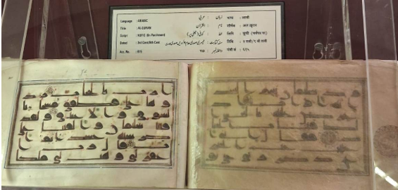

Audio Explanation:
Audio for selected language is not available.
পবিত্র কোরআন (কুফিক লিপি)

তৃতীয় হিজরি শতকের পার্চমেন্ট পাণ্ডুলিপি
এটি পবিত্র কোরআনের একটি প্রাচীন পাণ্ডুলিপি, যা পার্চমেন্ট বা প্রস্তুত করা পশুর চামড়ার ওপর কুফিক লিপিতে লেখা হয়েছে। কোরআনের লিপিচর্চার প্রাচীনতম ও অত্যন্ত মর্যাদাপূর্ণ ধারাগুলোর মধ্যে কুফিক লিপি অন্যতম। কুফিক লিপির বৈশিষ্ট্য হলো এর কৌণিক, দৃঢ় এবং সুস্পষ্ট অক্ষররূপ। ইসলামের প্রাথমিক শতাব্দীগুলিতে, বিশেষত প্রথম থেকে চতুর্থ হিজরি শতাব্দীর মধ্যে, পবিত্র কোরআন লিপিবদ্ধ করার ক্ষেত্রে এই লিপির ব্যাপক ব্যবহার দেখা যায়। পাণ্ডুলিপি লেখার উপকরণ হিসেবে পার্চমেন্ট, অর্থাৎ প্রস্তুত করা পশুর চামড়ার ব্যবহার প্রাচীন পাণ্ডুলিপি-লিখন ঐতিহ্যের পরিচয় বহন করে। এর স্থায়িত্ব এবং পবিত্র কোরআনের বাণী সংরক্ষণের উপযোগিতার কারণে প্রাচীন যুগে পার্চমেন্ট বিশেষভাবে মূল্যবান ছিল। এই ধরনের প্রাচীন পাণ্ডুলিপিতে সাধারণত স্বরচিহ্ন ও জটিল অলংকরণের ব্যবহার খুব সীমিত থাকত। ফলে লেখার স্পষ্টতা ও পাঠযোগ্যতার ওপরই বেশি গুরুত্ব দেওয়া হতো। কুফিক লিপিতে লিখিত কোরআনের পাণ্ডুলিপিগুলোর ঐতিহাসিক, শিল্পকলাগত এবং ধর্মীয় গুরুত্ব অপরিসীম। এগুলি ইসলামের প্রাথমিক যুগের লিপিকারদের কাজের ধরন এবং কোরআনের পাঠ সংরক্ষণের ইতিহাস সম্পর্কে গুরুত্বপূর্ণ প্রমাণ প্রদান করে। এই পাণ্ডুলিপিটির অনুলিপি তৃতীয় হিজরি শতাব্দীর। এতে স্বরচিহ্ন বোঝাতে লাল বিন্দু ব্যবহার করা হয়েছে। পাণ্ডুলিপির চারপাশে রয়েছে সোনা ও বিভিন্ন রঙে অঙ্কিত রেখাবদ্ধ অলংকৃত প্রান্তসীমা, এবং প্রতিটি সূরার শিরোনাম সোনালি রঙে লেখা হয়েছে।
Holy Quran (Kufic Script)
3rd Century Hijri Parchment Codex
This manuscript is a copy of the Holy Quran written in Kufic scripts on parchment representing one of the earliest and most revered forms of Quranic calligraphy. Kufic, characterized by its angular, bold, and monumental letter forms, was widely used in the early centuries of Islam, particularly between the 1st and 4th centuries Hijri. The use of parchment (prepared animal skin) reflects the early manuscript tradition, valued for its durability and sacred suitability for the transmission of the Quranic text. Such manuscripts typically lack vowel marks and elaborate illumination, emphasizing clarity. Qurans written in Kufic scripts are of immense historical, artistic and religious significance, providing vital evidence of early Islamic scribal practices and the preservation of the Quranic text. This codex is 3rd century Hijri copy, red dots for vowels, gold and coloured ruled borders Heading of Suras in gold.
വിശുദ്ധ ഖുർആൻ (കൂഫിക് ലിപി)
മൂന്നാം ഹിജ്റ നൂറ്റാണ്ടിലെ ചർമ്മപേപ്പർ കോഡെക്സ്
ഖുർആൻ കൈയെഴുത്തുപ്രതികളുടെ ഏറ്റവും പഴയതും ആദരണീയവുമായ രൂപങ്ങളിലൊന്നായ കൂഫിക് ലിപിയിൽ ചർമ്മപേപ്പറിൽ എഴുതപ്പെട്ട വിശുദ്ധ ഖുർആന്റെ ഒരു പ്രതിയാണിത്. ഇസ്ലാമിന്റെ ആദ്യ നൂറ്റാണ്ടുകളിൽ, പ്രത്യേകിച്ച് ഹിജ്റ ഒന്ന് മുതൽ നാല് വരെയുള്ള നൂറ്റാണ്ടുകളിൽ വ്യാപകമായി ഉപയോഗിച്ചിരുന്ന കൂഫിക് ലിപി, കോണോടുകോണായതും കട്ടിയുള്ളതും വലുതുമായ അക്ഷരരൂപങ്ങൾക്ക് പേരുകേട്ടതാണ്. ഈടുനിൽക്കുന്നതിനും ഖുർആൻ വചനങ്ങൾ പകർത്താൻ ഏറ്റവും പവിത്രമെന്ന നിലയിലും അന്നത്തെ കാലത്ത് വ്യാപകമായി ഉപയോഗിച്ചിരുന്നതാണ് ചർമ്മപേപ്പർ. ഇത്തരം കൈയെഴുത്തുപ്രതികളിൽ സാധാരണയായി സ്വരചിഹ്നങ്ങളോ സങ്കീർണ്ണമായ അലങ്കാരങ്ങളോ ഉണ്ടാകാറില്ല, പകരം വായനയുടെ വ്യക്തതയ്ക്കാണ് മുൻഗണന നൽകുന്നത്. ആദ്യകാല ഇസ്ലാമിക എഴുത്തുരീതികളെക്കുറിച്ചും ഖുർആൻ സംരക്ഷണത്തെക്കുറിച്ചുമുള്ള പ്രധാന തെളിവുകൾ നൽകുന്ന കൂഫിക് ഖുർആനുകൾക്ക് ചരിത്രപരവും കലാപരവുമായ വലിയ പ്രാധാന്യമുണ്ട്. ഹിജ്റ മൂന്നാം നൂറ്റാണ്ടിൽ തയ്യാറാക്കപ്പെട്ട ഈ കോഡെക്സിൽ, സ്വരചിഹ്നങ്ങൾക്കായി ചുവന്ന ബിന്ദുക്കളും, സ്വർണ്ണത്തിലും മറ്റ് നിറങ്ങളിലുമുള്ള വരകളാൽ തീർത്ത ബോർഡറുകളും, സ്വർണ്ണത്തിൽ എഴുതിയ സൂറത്തുകളുടെ തലക്കെട്ടുകളും ഉൾപ്പെടുത്തിയിരിക്കുന്നു.
قرآن مجید (کوفی رسم الخط)
تیسری صدی ہجری کا چمڑے کے ورق پر مخطوطہ
یہ مخطوطہ قرآن مجید کی ایک قدیم نقل ہے، جو کوفی رسم الخط میں چمڑے کے ورق پر تحریر کی گئی ہے۔ کوفی رسم الخط قرآن مجید کی خطاطی کے قدیم ترین اور معروف اندازوں میں شمار ہوتا ہے۔ اس کے حروف اپنی واضح، مضبوط اور زاویہ دار ساخت کے لیے نمایاں ہیں۔ یہ رسم الخط اسلام کے ابتدائی دور میں، خاص طور پر پہلی سے چوتھی صدی ہجری کے دوران، بڑے پیمانے پر رائج تھا۔ چمڑے کے ورق، یعنی تیار شدہ جانور کی کھال، پر کتابت ابتدائی مخطوطات کی روایت کا حصہ تھی۔ یہ اپنی مضبوطی اور قرآن مجید کے متن کو محفوظ رکھنے کے لیے موزوں ہونے کی وجہ سے استعمال کیا جاتا تھا۔ ایسے مخطوطات میں عموماً حرکات اور زیادہ سجاوٹ نہیں کی جاتی تھی، تاکہ متن واضح اور آسانی سے پڑھا جا سکے۔ کوفی رسم الخط میں تحریر کیے گئے قرآن مجید کے مخطوطات تاریخی، فنی اور مذہبی اعتبار سے خاص اہمیت رکھتے ہیں۔ یہ ابتدائی اسلامی دور میں کتابت کے طریقوں اور قرآن مجید کے متن کو محفوظ رکھنے کی روایت کے اہم شواہد فراہم کرتے ہیں۔ یہ مخطوطہ تیسری صدی ہجری کی نقل ہے۔ اس میں حرکات ظاہر کرنے کے لیے سرخ نقطے استعمال کیے گئے ہیں۔ حاشیے سونے اور مختلف رنگوں کی لکیروں سے نمایاں کیے گئے ہیں، جبکہ سورتوں کے عنوانات سونے سے تحریر کیے گئے ہیں۔
પવિત્ર કુરાન શરીફ (કુફી લિપિ)
૩જી સદી હિજરી ચામડા પરની હસ્તપ્રત
આ પવિત્ર કુરાન શરીફની એક હસ્તપ્રત છે, જે ચામડા (પાર્ચમેન્ટ - તૈયાર કરેલી પ્રાણીઓની ચામડી) પર કુફી લિપિમાં લખાયેલી છે. આ કુરાની કેલિગ્રાફી (અક્ષરલેખન) ના સૌથી પ્રાચીન અને આદરણીય સ્વરૂપોમાંની એક છે. કુફી લિપિ તેની કોણીય, બોલ્ડ (ઘાટી) અને સ્મારક જેવી અક્ષર શૈલી માટે જાણીતી છે, જેનો વ્યાપક ઉપયોગ ઇસ્લામની શરૂઆતની સદીઓમાં, ખાસ કરીને ૧ લી થી ૪ થી સદી હિજરી વચ્ચે થતો હતો. ચામડાનો ઉપયોગ એ પ્રાચીન હસ્તપ્રત પરંપરા દર્શાવે છે, જે તેની ટકાઉપણું અને કુરાની લખાણના પ્રસારણ માટે તેની પવિત્ર યોગ્યતાને કારણે મૂલ્યવાન માનવામાં આવતી હતી. આવા હસ્તપ્રતોમાં સામાન્ય રીતે સ્વર ચિહ્નો (ઝબર, જેર, પેશ) અને અતિશય સુશોભનનો અભાવ હોય છે, જે સ્પષ્ટતા પર ભાર મૂકે છે. કુફી લિપિમાં લખાયેલું આ કુરાન પુષ્કળ ઐતિહાસિક, કલાત્મક અને ધાર્મિક મહત્વ ધરાવે છે, જે પ્રારંભિક ઇસ્લામિક લેખન પ્રથાઓ અને કુરાની લખાણની જાળવણીના મહત્વપૂર્ણ પુરાવા પૂરા પાડે છે. આ કોડેક્સ (ગ્રંથ) ત્રીજી સદી હિજરીની નકલ છે, જેમાં સ્વર માટે લાલ ટપકાં, સોનેરી અને રંગબેરંગી નિયંત્રિત કિારીઓ (રૂલ્ડ બોર્ડર્સ) છે અને સુરાઓના શીર્ષક સોનેરી રંગમાં લખેલા છે.
புனித குர்ஆன் (கூஃபிக் எழுத்துமுறை)
3ஆம் நூற்றாண்டு ஹிஜ்ரி தோல் ஏட்டுப் பிரதி
இந்தக் கையெழுத்துப் பிரதி, குர்ஆன் எழுத்துக்கலையின் மிகப் பழமையான மற்றும் மிகவும் போற்றப்படும் வடிவங்களில் ஒன்றான கூஃபிக் எழுத்துக்களில் தோல் ஏட்டில் எழுதப்பட்ட புனித குர்ஆனின் ஒரு பிரதியாகும். கூஃபிக் எழுத்துக்கலை, அதன் கோணலான, தடித்த மற்றும் பிரம்மாண்டமான எழுத்து வடிவங்களால் வகைப்படுத்தப்படுகிறது. இது இஸ்லாத்தின் ஆரம்ப நூற்றாண்டுகளில், குறிப்பாக ஹிஜ்ரி 1 முதல் 4 ஆம் நூற்றாண்டுகளுக்கு இடையில் பரவலாகப் பயன்படுத்தப்பட்டது. தோல் ஏட்டின் (பதப்படுத்தப்பட்ட விலங்குத் தோல்) பயன்பாடு, அதன் நீடித்துழைக்கும் தன்மை மற்றும் குர்ஆன் உரையைப் பரப்புவதற்கான புனிதமான பொருத்தத்திற்காக மதிக்கப்பட்ட ஆரம்பகால கையெழுத்துப் பிரதி மரபைப் பிரதிபலிக்கிறது. இத்தகைய கையெழுத்துப் பிரதிகளில் பொதுவாக உயிரெழுத்துக் குறிகளும் விரிவான சித்திரங்களும் இருக்காது, இது தெளிவை வலியுறுத்துகிறது. கூஃபிக் எழுத்துக்களில் எழுதப்பட்ட குர்ஆன்கள் மகத்தான வரலாற்று, கலை மற்றும் மத முக்கியத்துவம் வாய்ந்தவை. அவை ஆரம்பகால இஸ்லாமிய எழுத்தர் நடைமுறைகள் மற்றும் குர்ஆன் உரையின் பாதுகாப்பு பற்றிய முக்கிய சான்றுகளை வழங்குகின்றன. இந்தத் தொகுப்பு ஹிஜ்ரி 3 ஆம் நூற்றாண்டுப் பிரதியாகும். இதில் உயிரெழுத்துக்களுக்கு சிவப்புப் புள்ளிகளும், தங்க மற்றும் வண்ணக் கோடுகளால் ஆன ஓரங்களும், சூராக்களின் தலைப்புகள் தங்கத்திலும் உள்ளன.
ಪರಿಶುದ್ಧ ಕುರಾನ್ (ಕುಫಿಕ್ ಲಿಪಿ)
3 ನೇ ಹಿಜ್ರಿ ಶತಮಾನದ ಚರ್ಮದ ಕಾಗದದ ಪ್ರತಿ
ಈ ಹಸ್ತಪ್ರತಿಯು ಚರ್ಮದ ಕಾಗದದ (ಪಾರ್ಚ್ಮೆಂಟ್) ಮೇಲೆ ಕುಫಿಕ್ ಲಿಪಿಯಲ್ಲಿ ಬರೆಯಲಾದ ಪರಿಶುದ್ಧ ಕುರಾನ್ನ ಪ್ರತಿಯಾಗಿದ್ದು, ಕುರಾನ್ ಕ್ಯಾಲಿಗ್ರಫಿಯ ಅತ್ಯಂತ ಆರಂಭಿಕ ಮತ್ತು ಪೂಜ್ಯ ರೂಪಗಳಲ್ಲಿ ಒಂದನ್ನು ಪ್ರತಿನಿಧಿಸುತ್ತದೆ. ಕೋನೀಯ, ದಪ್ಪನೆಯ ಮತ್ತು ಭವ್ಯವಾದ ಅಕ್ಷರ ರೂಪಗಳಿಂದ ನಿರೂಪಿಸಲ್ಪಟ್ಟ ಕುಫಿಕ್ ಲಿಪಿಯು ಇಸ್ಲಾಂ ಧರ್ಮದ ಆರಂಭಿಕ ಶತಮಾನಗಳಲ್ಲಿ, ವಿಶೇಷವಾಗಿ 1 ರಿಂದ 4 ನೇ ಹಿಜ್ರಿ ಶತಮಾನಗಳ ನಡುವೆ ವ್ಯಾಪಕವಾಗಿ ಬಳಕೆಯಲ್ಲಿತ್ತು. ಚರ್ಮದ ಕಾಗದದ (ಸಂಸ್ಕರಿಸಿದ ಪ್ರಾಣಿ ಚರ್ಮ) ಬಳಕೆಯು ಆರಂಭಿಕ ಹಸ್ತಪ್ರತಿ ಸಂಪ್ರದಾಯವನ್ನು ಪ್ರತಿಬಿಂಬಿಸುತ್ತದೆ ಹಾಗೂ ತನ್ನ ಬಾಳಿಕೆ ಮತ್ತು ಕುರಾನ್ ಪಠ್ಯದ ಪ್ರಸರಣಕ್ಕೆ ಹೊಂದಿದ್ದ ಪವಿತ್ರ ಸೂಕ್ತತೆಗಾಗಿ ಮೌಲ್ಯಯುತವಾಗಿತ್ತು. ಇಂತಹ ಹಸ್ತಪ್ರತಿಗಳು ಸಾಮಾನ್ಯವಾಗಿ ಸ್ವರ ಚಿಹ್ನೆಗಳು ಮತ್ತು ಸಂಕೀರ್ಣ ಅಲಂಕಾರಿಕ ವಿನ್ಯಾಸಗಳನ್ನು ಹೊಂದಿರುವುದಿಲ್ಲ, ಬದಲಿಗೆ ಸ್ಪಷ್ಟತೆಗೆ ಒತ್ತು ನೀಡುತ್ತವೆ. ಕುಫಿಕ್ ಲಿಪಿಯಲ್ಲಿ ಬರೆಯಲಾದ ಕುರಾನ್ಗಳು ಅಗಾಧವಾದ ಐತಿಹಾಸಿಕ, ಕಲಾತ್ಮಕ ಮತ್ತು ಧಾರ್ಮಿಕ ಮಹತ್ವವನ್ನು ಹೊಂದಿದ್ದು, ಆರಂಭಿಕ ಇಸ್ಲಾಮಿಕ್ ಲಿಪಿಕಾರರ ಅಭ್ಯಾಸಗಳು ಮತ್ತು ಕುರಾನ್ ಪಠ್ಯದ ಸಂರಕ್ಷಣೆಗೆ ಪ್ರಮುಖ ಸಾಕ್ಷ್ಯವನ್ನು ಒದಗಿಸುತ್ತವೆ. ಈ ಹಸ್ತಪ್ರತಿ ಗ್ರಂಥವು 3 ನೇ ಹಿಜ್ರಿ ಶತಮಾನದ ಪ್ರತಿಯಾಗಿದ್ದು, ಸ್ವರಗಳಿಗಾಗಿ ಕೆಂಪು ಚುಕ್ಕಿಗಳನ್ನು, ಚಿನ್ನದ ಮತ್ತು ಬಣ್ಣದ ಅಂಚಿನ ಗೆರೆಗಳನ್ನು ಹಾಗೂ ಚಿನ್ನದ ಬಣ್ಣದಲ್ಲಿ ಸೂರಾಗಳ ಶೀರ್ಷಿಕೆಗಳನ್ನು ಹೊಂದಿದೆ.
పవిత్ర ఖురాన్ (కూఫీ లిపి)
3వ శతాబ్దం హిజ్రీ చర్మపత్ర ప్రతి
ఈ లిఖిత ప్రతి చర్మపత్రంపై (పార్చ్మెంట్) కూఫీ లిపిలో రాయబడిన పవిత్ర ఖురాన్ గ్రంథం; ఇది ఖురాన్ కాలిగ్రఫీలోని అత్యంత ప్రాచీనమైన మరియు అత్యంత గౌరవనీయమైన రూపాలలో ఒకటి. కోణీయమైన, దృఢమైన మరియు గంభీరమైన అక్షర నిర్మాణ శైలి కలిగిన కూఫీ లిపిని ఇస్లాం తొలి శతాబ్దాలలో, ముఖ్యంగా హిజ్రీ 1 నుండి 4వ శతాబ్దాల మధ్య విస్తృతంగా ఉపయోగించేవారు. చర్మపత్రాల (ప్రత్యేకంగా శుద్ధి చేసిన జంతు చర్మం) వాడకం ప్రాచీన లిఖిత ప్రతుల సంప్రదాయాన్ని ప్రతిబింబిస్తుంది; కాలపరీక్షను తట్టుకునే దీని మన్నిక మరియు పవిత్ర ఖురాన్ వచనాలను భద్రపరచడానికి గల అనుకూలత కారణంగా దీనికి ఎంతో విలువ ఉండేది. స్పష్టతకే ప్రాధాన్యతనిచ్చే ఇటువంటి ప్రతులలో సాధారణంగా అచ్చుల గుర్తులు (ఓవెల్ మార్క్స్) మరియు ఆడంబరమైన అలంకారాలు ఉండవు. కూఫీ లిపిలో రాయబడిన ఖురాన్ ప్రతులు అపారమైన చారిత్రక, కళాత్మక మరియు మతపరమైన ప్రాముఖ్యతను కలిగి ఉండి, ప్రారంభ ఇస్లామిక్ లేఖన పద్ధతులకు మరియు ఖురాన్ గ్రంథ పరిరక్షణకు కీలకమైన ఆధారాలుగా నిలుస్తాయి. ఈ సంపూర్ణ గ్రంథం (కోడెక్స్) హిజ్రీ 3వ శతాబ్దానికి చెందిన ప్రతి; ఇందులో అచ్చుల కోసం ఎరుపు రంగు చుక్కలు, బంగారు మరియు రంగుల అంచులు (బోర్డర్లు) ఉన్నాయి, అలాగే సూరాల శీర్షికలు బంగారు సిరాతో లిఖించబడ్డాయి.
ପବିତ୍ର କୋରାନ (କୁଫିକ୍ ଲିପି)
୩ୟ ହିଜରୀ ଶତାବ୍ଦୀର ଚର୍ମପଟ୍ଟ ପାଣ୍ଡୁଲିପି
ଚର୍ମ-ପଟ୍ଟ ଉପରେ 'କୁଫିକ୍' ଲିପିରେ ଲିଖିତ ଏହି ପାଣ୍ଡୁଲିପିଟି ପବିତ୍ର କୋରାନର ଏକ ପ୍ରାଚୀନତମ ପ୍ରତିଲିପି, ଯାହା କୋରାନୀୟ ଲିପିକଳା (କାଲିଗ୍ରାଫି)ର ସବୁଠାରୁ ଆଦ୍ୟ ଓ ସମ୍ମାନଜନକ ଶୈଳୀକୁ ପ୍ରତିନିଧିତ୍ୱ କରେ। ଆପଣାର କୋଣାକୃତି, ବଳିଷ୍ଠ ଏବଂ ଗାମ୍ଭୀର୍ଯ୍ୟପୂର୍ଣ୍ଣ ଅକ୍ଷର ସଂରଚନା ପାଇଁ ପ୍ରସିଦ୍ଧ 'କୁଫିକ୍' ଲିପି ଇସଲାମର ପ୍ରାରମ୍ଭିକ ଶତାବ୍ଦୀଗୁଡ଼ିକରେ, ବିଶେଷ କରି ପ୍ରଥମ ରୁ ଚତୁର୍ଥ ହିଜରୀ ଶତାବ୍ଦୀ ମଧ୍ୟରେ ବହୁଳ ଭାବରେ ବ୍ୟବହୃତ ହେଉଥିଲା। ପାର୍ଚମେଣ୍ଟ ଅର୍ଥାତ୍ ସଂସ୍କୃତ ବା ଶୋଧିତ ଚର୍ମପଟର ବ୍ୟବହାର ପ୍ରାଚୀନ ପାଣ୍ଡୁଲିପି ପରମ୍ପରାକୁ ସୂଚାଏ, ଯାହା ଏହାର ସୁଦୀର୍ଘ ସ୍ଥାୟିତ୍ୱ ଏବଂ ପବିତ୍ର କୋରାନୀୟ ବାଣୀର ସଂରକ୍ଷଣ ପାଇଁ ଅତ୍ୟନ୍ତ ପବିତ୍ର ଓ ଉପଯୁକ୍ତ ମନେକରାଯାଉଥିଲା। ଏହିପରି ପ୍ରାରମ୍ଭିକ ପାଣ୍ଡୁଲିପିଗୁଡ଼ିକରେ ସାଧାରଣତଃ ସ୍ୱରଚିହ୍ନ (ମାତ୍ରା) ଏବଂ ଜଟିଳ ଆଲେଖ୍ୟ ସଜ୍ଜାର ଅଭାବ ଥାଏ, ଯାହା ମୂଳ ପାଠ୍ୟର ସ୍ପଷ୍ଟତା ଉପରେ ଅଧିକ ଗୁରୁତ୍ୱ ଦେଇଥାଏ। କୁଫିକ୍ ଲିପିରେ ଲିଖିତ କୋରାନ ପାଣ୍ଡୁଲିପିଗୁଡ଼ିକର ବିପୁଳ ଐତିହାସିକ, କଳାତ୍ମକ ଏବଂ ଧାର୍ମିକ ମହତ୍ତ୍ୱ ରହିଛି, ଯାହା ଆଦ୍ୟ ଇସଲାମୀୟ ଲିପିକାର ପରମ୍ପରା ଏବଂ କୋରାନ ପାଠ୍ୟର ସଂରକ୍ଷଣ ସମ୍ପର୍କରେ ଗୁରୁତ୍ୱପୂର୍ଣ୍ଣ ପ୍ରମାଣ ପ୍ରଦାନ କରେ। ଏହି ବିଶିଷ୍ଟ ପାଣ୍ଡୁଲିପି (କୋଡେକ୍ସ)ଟି ୩ୟ ହିଜରୀ ଶତାବ୍ଦୀର ଏକ ଦୁର୍ଲଭ ନମୁନା; ଏଥିରେ ସ୍ୱର-ସୂଚକ ଭାବେ ଲାଲ୍ ବିନ୍ଦୁ, ସୁବର୍ଣ୍ଣ ଓ ରଙ୍ଗୀନ ରେଖାଙ୍କିତ ସୀମାରେଖା (ବୋର୍ଡର) ଏବଂ 'ସୂରା' (ଅଧ୍ୟାୟ)ଗୁଡ଼ିକର ଶୀର୍ଷକ ସୁବର୍ଣ୍ଣ ଅକ୍ଷରରେ ଲିଖିତ।
पवित्र क़ुरआन (कूफ़ी लिपि)
तीसरी हिजरी शताब्दी की चर्मपत्र पांडुलिपि
यह पांडुलिपि पवित्र क़ुरआन की एक प्रति है, जो चर्मपत्र पर कूफ़ी लिपि में लिखी गई है और क़ुरआनी सुलेख (कैलीग्राफी) की प्रारंभिक एवं अत्यंत प्रतिष्ठित शैलियों में से एक का प्रतिनिधित्व करती है। कूफ़ी लिपि अपनी कोणीय, सुदृढ़ और भव्य अक्षर-रूपों के लिए प्रसिद्ध है तथा इस्लाम की प्रारंभिक शताब्दियों में, विशेष रूप से पहली से चौथी हिजरी शताब्दी के बीच, इसका व्यापक रूप से प्रयोग किया जाता था। चर्मपत्र (तैयार किए गए पशु-चर्म) का उपयोग प्रारंभिक पांडुलिपि परंपरा को दर्शाता है। इसकी टिकाऊ प्रकृति तथा क़ुरआन के पवित्र पाठ के संरक्षण एवं लेखन के लिए इसकी उपयुक्तता के कारण इसे विशेष महत्व दिया जाता था। ऐसी पांडुलिपियों में सामान्यतः स्वर-चिह्न और विस्तृत अलंकरण नहीं होते थे, जिससे पाठ की स्पष्टता पर विशेष बल दिया जाता था। कूफ़ी लिपि में लिखी गई क़ुरआन की पांडुलिपियाँ ऐतिहासिक, कलात्मक और धार्मिक दृष्टि से अत्यंत महत्वपूर्ण हैं। ये प्रारंभिक इस्लामी लेखन-पद्धतियों तथा क़ुरआन के पाठ के संरक्षण से संबंधित महत्वपूर्ण प्रमाण प्रस्तुत करती हैं। यह पांडुलिपि तीसरी हिजरी शताब्दी की प्रति है। इसमें स्वरों को दर्शाने के लिए लाल बिंदुओं का प्रयोग किया गया है। पांडुलिपि में सुनहरी एवं रंगीन रेखांकित सीमाएँ हैं तथा सूराओं के शीर्षक सुनहरे रंग में लिखे गए हैं।
पवित्र कुराण (कुफिक लिपी)
३ ऱ्या हिजरी शतकातील चर्मपत्र प्रत
हे हस्तलिखित चर्मपत्रावर (पार्चमेंट) कुफिक लिपीत लिहिलेली पवित्र कुराणची प्रत असून, ती कुराण कॅलिग्राफीच्या सर्वात जुन्या आणि अतिशय आदरणीय प्रकारांपैकी एक दर्शवते. कुफिक लिपी, जी तिच्या कोनीय, ठळक आणि भव्य अक्षरशैलीसाठी ओळखली जाते, ती इस्लामच्या सुरुवातीच्या शतकांमध्ये, विशेषत: 1 ल्या आणि 4 थ्या हिजरी शतकात मोठ्या प्रमाणावर वापरली जात होती. चर्मपत्राचा (तयार केलेले प्राण्यांचे कातडे) वापर सुरुवातीच्या हस्तलिखित परंपरेला प्रतिबिंबित करतो, जो त्याच्या टिकाऊपणासाठी आणि कुराणच्या मजकुराच्या प्रसारणासाठी असलेल्या पावित्र्यासाठी मौल्यवान मानला जात असे. अशा हस्तलिखितांमध्ये सामान्यतः स्वरचिन्हे आणि विस्तृत सजावट नसते, ज्यामुळे स्पष्टतेवर भर दिला जातो. कुफिक लिपीत लिहिलेली कुराण ही ऐतिहासिक, कलात्मक आणि धार्मिकदृष्ट्या अत्यंत महत्त्वाची आहेत, जी सुरुवातीच्या इस्लामिक लेखनपद्धती आणि कुराणच्या मजकुराच्या जतनाचे महत्त्वपूर्ण पुरावे देतात. हा ग्रंथ 3 ऱ्या हिजरी शतकातील प्रत असून, यात स्वरांसाठी लाल ठिपके, सोनेरी आणि रंगीत आखलेल्या सीमा आणि सुरांचे मथळे सोन्यात दिलेले आहेत.